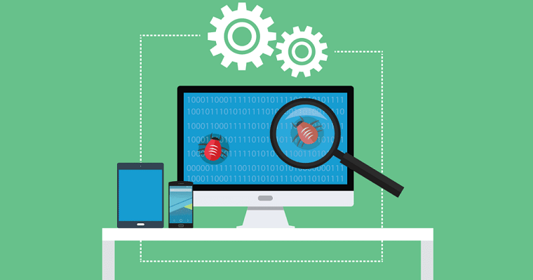
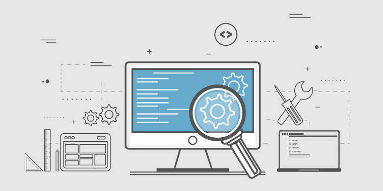

Види тестування сайтів

Перед тим як випускати готовий проект в «вільне плавання», необхідно провести обов’язкове тестування
веб-сайту. Це фінальний етап роботи, який полягає в перевірці працездатності всіх функцій ресурсу і його
відповідності технічним завданням.
Тут мається на увазі проведення масштабної роботи. Завдання полягає в тому, щоб перевірити систему від
початку і до кінця. Якщо цього не зробити, то на сайті весь час будуть виникати помилки. В результаті
користувач залишиться незадоволеним і піде до конкурентів, а ваш ресурс займе невигідну позицію в пошуковій
видачі Гугла або інших систем. Щоб виправити ситуацію: в кращому разі доведеться доопрацювати сайт, в
гіршому – зайнятись повторною розробкою, а це призведе до колосальних витрат часу і грошей.
Основні види тестування сайтів:
- функціональне тестування;
- тестування юзабіліті (перевірка зручності користування);
- тестування сумісності (конфігураційне тестування);
- тест на продуктивність;
Щоб отримати на виході якісний продукт, не можна пропускати жоден з перерахованих етапів. Далі
ми детально
розглянемо кожен з них, а також дізнаємося з чого почати роботу, з якою метою проводиться і що включає в
себе той чи інший вид перевірки.
Функціональне тестування
Функціональне тестування сайту – це один з найбільш масштабних видів робіт, з якого все починається. Основна
мета – переконатися в коректності роботи основних функцій сайту. Чек-лист на цьому етапі виглядає наступним
чином:
- перевірка посилань (внутрішніх, вихідних, ізольованих і т. д.);
- перевірка форм – в подальшому дозволить взаємодіяти з користувачами і отримувати від них дані;
- тест файлів cookie – необхідний для підтримки сеансів з авторизацією;
- валідація HTML/CSS – перевірка на відсутність серйозних синтаксичних помилок і доступу ресурсу для
різних пошукових систем;
- перевірка бази даних – тут потрібно простежити за правильністю виконання запитів, а також вилучення та
оновлення даних.
Крім цього види функціонального тестування можна розбити на такі різновиди:
- ad-hock перевірка – не припускає попередньої підготовки. Цей метод допомагає швидко ознайомитися з
системою, а також виявити основні несправності;
- негативний тестінг – виявляє невірні дані і значення, які можуть привести до нестабільної роботи
системи;
- проведення еквівалентних тестів – група тестів, спрямованих на виявлення конкретної помилки;
- дослідницька перевірка (exploratory testing) – методика, що дозволяє одночасно розробляти і виконувати
тести, а заодно ретельно вивчити готовий продукт.
Тестування веб-ресурсів: юзабіліті
Перевірка зручності використання допомагає оцінити сприйняття дизайну сайту і його функціонал користувачем і
те, наскільки довго він готовий не закривати вкладку з ним. Сайт повинен бути послідовним і чітко
структурованим. На цьому етапі критерії перевірки включають такі пункти:
- навігаційне тестування – перевірка доступу до меню, сторінок, блоків, полів і кнопок. Важливо, щоб
структура була логічною і зрозумілою;
- перевірка контенту – перевіряється граматика і орфографія, розміщення заголовків, а також відповідність
розмірів зображень;
- комфорт користування – перевірка структури і наявності зайвих елементів.
Типи тестування сайту на сумісність
На цьому етапі перевіряється адаптивність сайту. Це так зване нефункціональне тестування, яке дозволяє
побачити, наскільки коректно відображається ресурс на різних розширеннях, браузерах і пристроях.
розрізняють:
- кросплатформений тестінг – перевіряється робота сайту на різних операційних системах і їх версіях;
- перевірка на кросбраузерність – сайт повинен однаково добре функціонувати в усіх відомих браузерах
(Google, Яндекс, Firefox, Internet Explorer і т. д.). Він також повинен правильно відображатися, на що
впливає якісна верстка;
- тестування на мобільних пристроях – тут багато помилок залишаються непоміченими. Фахівці застосовують
різні види тестування сайтів для їх перевірки на адаптивність.
Тест на продуктивність
Важливий етап перевірки, який допомагає оцінити стабільність роботи ресурсу в
критичних ситуаціях. Включає
наступні методи:
- тестування навантаження – перевіряється здатність одночасної обробки великої кількості призначених для
користувача запитів. Проводиться для того, щоб визначити пропускну здатність ресурсу або окремих
сторінок;
- стрес-тестування – перевірка стійкості системи в екстремальних умовах. Допомагає уникнути поломок під
час сильних навантажень, а також визначити їх допустимий рівень;
- перевірка на швидкість з’єднання – перевіряється час відгуку сайту.
Потрібно відзначити, що тест на продуктивність може включати різні етапи тестування сайту. Ми перерахували
лише основні пункти, які можна розширити в залежності від ваших цілей.
Перевірка безпеки
Цей вид перевірки – ключ до надійної роботи сайту. Основне завдання полягає в тому, щоб виявити
найслабші
місця, які можуть призвести до втрати даних або порушення роботи системи. Для цього зазвичай
імітують атаку
шкідливого джерела, а потім усувають знайдені загрози.

Переваги тестування сайту фахівцями
Тестування сайтів може проводитися різними способами. Для цього фахівці
розробляють стратегію, яка включає
певні етапи тестування веб-проектів з докладним планом дій, щоб нічого не упустити.
Слід зазначити, що перевірка може проводитися вручну або в автоматичному режимі. Автоматизація передбачає
використання різних програм і сервісів, які суттєво економлять час, що особливо важливо для перевірки
масштабних проектів. Але не можна недооцінювати ручний спосіб, який допомагає оцінити зручність системи і
дизайн з точки зору користувача. В результаті ви отримаєте:
- стабільний, безпечний і надійно захищений ресурс;
- зручний і функціональний продукт, який буде залучати нових користувачів;
- економію ресурсів і часу на підтримку роботи сайту.
У веб-студії WebTune можна замовити тестування web-сайту, включаючи
А/Б тестування. Для цього працюють досвідчені QA-фахівці, які здатні підвищити ефективність роботи ресурсу
або його окремих систем.